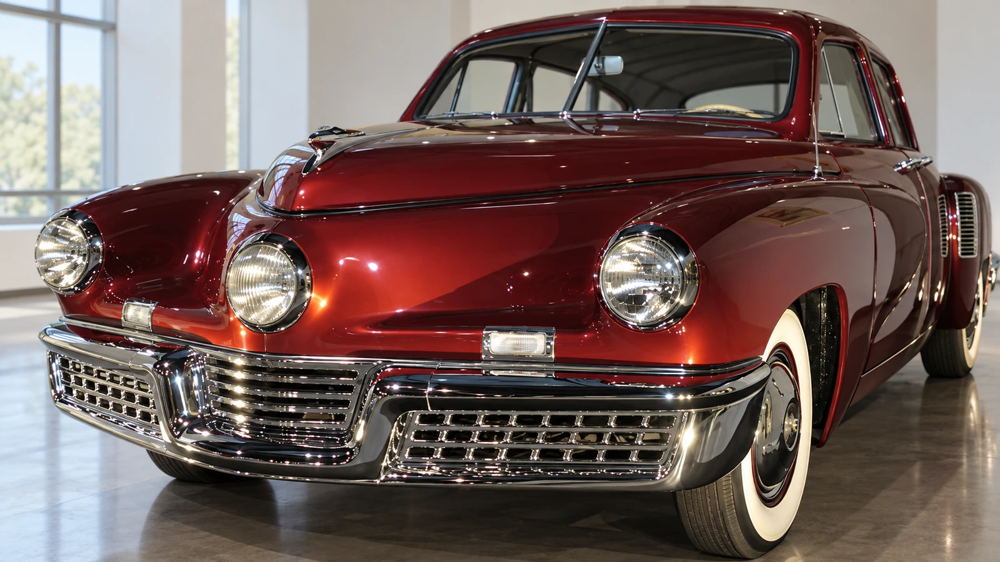
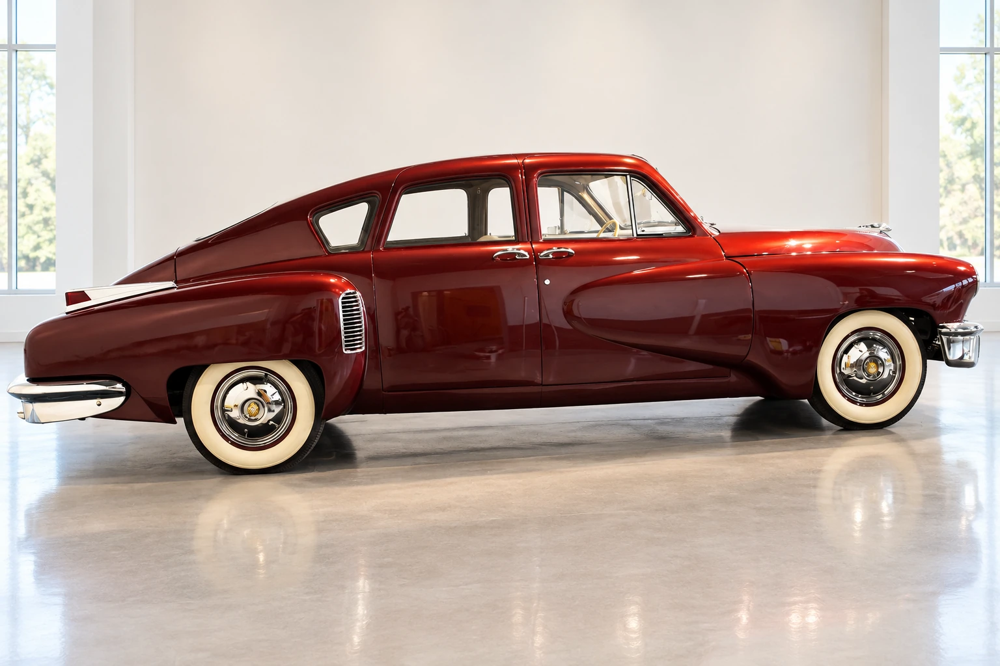

A remarkable car needs a more careful story
A Tucker does not need a conspiracy theory to hold a room. Its central headlamp, broad nose and long, tapering body make an immediate impression. The harder question begins after that first encounter: how should we separate an ambitious automobile from the mythology surrounding the company that built it?
The name matters. The finished automobile was the Tucker 48; “Torpedo” belonged to the earlier promotional story. The familiar total of 51 includes the Tin Goose prototype and 50 subsequent cars, rather than 51 identical production examples.
That is a tiny output, but small production alone does not explain a business failure. Nor does it demonstrate that the established industry secretly destroyed a viable competitor. A historical account has to examine money, manufacturing and the distance between a public promise and a repeatable product.

Safety was part of the proposition
The museum identifies chassis 1001, the reference for this image series, as Royal Maroon with a beige interior. That documented configuration gives us a specific car through which to examine the design.
The Tucker club documents features including a padded dashboard and a windshield intended to release in an impact. These ideas reveal the priorities behind the project. They are not substitutes for modern crash testing, and the survival of a carefully preserved collector car cannot establish how an entire production fleet would have performed.
That distinction respects the engineering more than an exaggerated claim does. An inventive feature is worth understanding on its own terms: what problem it addressed, how it was implemented and what evidence remains. Calling every unusual detail decades ahead of its time turns a machine into a slogan.
The company and the courtroom
The Henry Ford traces Tucker’s company to 1946 and the public prototype unveiling to June 19, 1947. The business raised money through avenues including dealership franchises. Its financing attracted a Securities and Exchange Commission investigation. Production had stopped by January 1949; Tucker and his associates were acquitted on January 22, 1950, after the company had already lost its chance to continue.
Acquittal is an essential fact. It does not, by itself, establish a particular account of who caused the collapse. The sequence is more instructive than a cinematic villain: a new manufacturer needed capital, credibility and a functioning industrial operation at the same time. Public controversy could damage all three before a court reached its decision.

What preservation can tell us
The Tucker club records 47 surviving cars. That remarkable survival is evidence of sustained preservation, not a controlled verdict on reliability or a promise about the next auction price.
Look closely at a surviving Tucker and the story becomes richer. There is the shape of the car, the record of its construction, the choices made during restoration and the history of the people who kept it. Those layers deserve their own questions. The automobile can be admired without making it prove every claim made on its behalf.
Sources & image references
Updated October 13, 2026. Original analysis; factual references are listed below. Generated images are illustrations, not documentary photographs. All three illustrations use Royal Maroon chassis 1001. Side-view reference photo credit: John McCabe / DrivingLine, via the Tucker Automobile Club; front reference: AACA Museum.